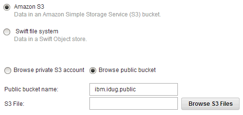
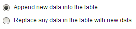

Kelly, the data analyst at Public Policy Institute, wants to be able to load publicly available data sets directly from AWS S3 object storage to BLU Acceleration for Cloud and use built-in analytic features to analyze data.
Generating the Schema
1
Login with the provided user name/password
2
Click
from the main menu
3
Click on the button and the
will open on the right.
4
Download the DDL file here:
censusPopulation_new.ddl.txt
5
Copy-Paste the DDL statements for the tables that you want to create and click on the
button. Users can also create all of the
tables from the attached file at once
Loading Data
6
Click
from the main menu
7
Open section
8
Choose
and provide the bucket name, e.g. .
Then, click on the button.

9
Select the data file that you want to load as below. Try these data files:
- can be selected for loading data into table
- or can be selected for loading data into table
10
Separator character and date/time options can be set as below. Click

11
Select Schema which will be same as your user name as in step 1, also select the table
that you are interested in loading
12
Choose either of the options below at
step

13
Select date and time when you want to run this load job, click on
,
and close the alert which appears after
the load job gets saved successfully
14
Feel free to follow other analytic scenarios on this data. Browse
R samples to get an idea of what you could do with it.